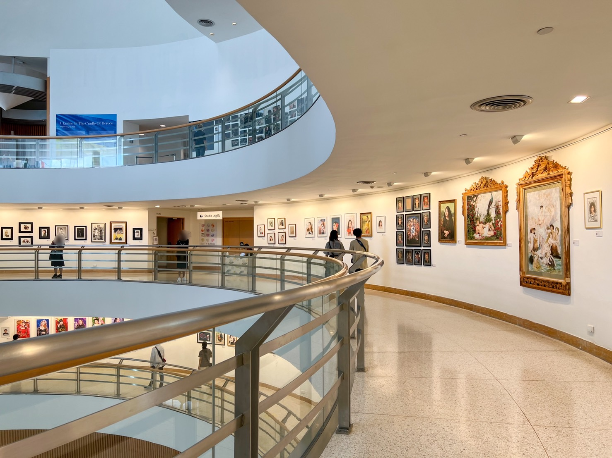

|
เยาวราช
ไชน่าทาวน์ ที่โด่งดังที่สุดในไทย รวมถึงยังโด่งดังไปจนถึงต่างประเทศในความเป็นย่าน สตรีทฟู้ด ที่มีของกินนานาชนิดริมสองข้างทางให้ได้อร่อยกันในราคาย่อมเยา นอกจากเรื่องของความอร่อยแล้ว เยาวราชยังเป็นย่านที่มีประวัติศาสตร์อยู่คู่กับกรุงเทพฯ มาอย่างยาวนาน จึงเป็นอีกที่เที่ยวหนึ่งที่มีเสน่ห์มากๆ |

หอศิลป์กรุงเทพ BACC
หอศิลป์กรุงเทพ หรือ หอศิลปวัฒนธรรมแห่งกรุงเทพมหานคร (Bangkok Art and Culture Centre) เป็นพิพิธภัณฑ์ศิลปะ ที่ตั้งอยู่ที่สี่แยกปทุมวันนั่นเองค่ะ ที่นี่จัดตั้งขึ้นเพื่อเป็นแหล่งรวมของกลุ่มศิลปิน เพื่อพบปะ แลกเปลี่ยนความคิด แนวการทำงานศิลป์ต่างๆ ทั้งยังมีนิทรรศการจัดแสดงหมุนเวียนเปลี่ยนไปในแต่ละช่วง ใครที่อยากมาหาแรงบันดาลใจ เสพงานศิลป์ อินกับงานอาร์ท ชวนกันมาได้ที่นี่ลย |
|
วัดอรุณ
ทุกคนที่มาเที่ยว กรุงเทพ จะต้องไปเยี่ยมชม วัดอรุณ อย่างน้อยสักครั้งหนึ่ง เพราะเป็นหนึ่งในที่ที่มีชื่อเสียงที่สุดของประเทศไทย ตั้งอยู่ริมแม่น้ำเจ้าพระยาฝั่งตะวันตก สังเกตเห็น วัดอรุณ ได้ง่ายๆ จาก พระปรางค์ สูง 82 เมตรที่ประดับด้วยกระเบื้องเคลือบบนฐานย่อมุม 7 ชั้น วัดอรุณ เปิดให้เข้าชมตั้งแต่เวลา 08:30 น. – 17:30 น. โดยไม่เสียค่าเข้าชม เมื่อมาเยี่ยมชม วัดอรุณ แนะนำให้เดินทางโดยเรือข้ามฝากเพื่อชมวิวจากแม่น้ำ ขึ้นได้ที่ ท่าเรือท่าเตียน โดยเรือจะออกทุกๆ 10 นาที วัดอรุณ เป็นหนึ่งในไม่กี่วัดในประเทศไทยที่อนุญาตให้นักท่องเที่ยวขึ้นไปบนพระปรางค์ได้ ดังนั้นควรเดินขึ้นบันไดไปเพื่อชมวิวจากบนยอด |
สถานีหัวลำโพง
สถานีรถไฟหัวลำโพงเป็นสถานีรถไฟเก่าแก่นับร้อยปีซึ่งก่อตั้งขึ้นในปลาย
สมัยรัชกาลที่ 5 ในปี พ.ศ. 2453 ค่ะ ลักษณะของสถานีรถไฟของที่นี่จะแตกต่างจากที่อื่นๆ ด้วยตัวอาคารทรงโดมโค้งสไตล์อิตาเลียน ผสมกับศิลปะแบบเรอเนสซองซ์ คล้ายกันกับสถานีรถไฟแฟรงก์เฟิร์ตในประเทศเยอรมนีนั่นเอง ทำให้ที่นี่เป็นอีกที่เที่ยวถ่ายรูปสวยในกรุงเทพฯ ทีเดียวค่ะ นอกจากนี้ ด้านหน้าของสถานีรถไฟ ยังมี พิพิธภัณฑ์รถไฟไทย ให้เราได้เข้าชมอีกด้วย
|